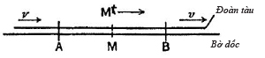

Giả sử vào đúng khoảnh khắc (từ điểm quan sát của người đứng trên bờ dốc) khi sét đánh vào các điểm A và B, có một hành khách ngồi ở chính giữa đoàn tàu, Mt đi qua người quan sát ở điểm giữa đoạn đường, M. Nếu đoàn tàu này không chuyển động so với bờ dốc, hành khách bên trong sẽ thấy tia sét lóe lên đồng thời, người quan sát trên bờ dốc cũng nhìn thấy như vậy.
Nhưng nếu đoàn tàu này đang chuyển động sang bên phải so với bờ dốc thì người quan sát bên trong sẽ tiến đến gần vị trí B trong khi các tín hiệu ánh sáng đang chuyển động. Do đó, anh ta có vị trí hơi lệch về bên phải vào thời điểm ánh sáng đến. Bởi vậy, anh ta sẽ thấy ánh sáng từ tia sét tại vị trí B trước khi anh ta thấy ánh sáng từ tia sét tại vị trí A. Vậy nên, anh ta sẽ khẳng định tia sét đó đánh vào điểm B trước khi đánh vào điểm A và những lần sét đánh đó không diễn ra đồng thời.
Einstein nói: “Vì vậy, chúng tôi đi đến một kết luận quan trọng: các sự kiện diễn ra đồng thời khi xét tương đối với bờ dốc không diễn ra đồng thời đối với đoàn tàu.” Nguyên lý tương đối nói rằng không có cách nào để cho là bờ dốc “đứng im” và đoàn tàu “chuyển động”. Chúng ta chỉ có thể nói rằng chúng chuyển động tương đối với nhau. Vì vậy, không có câu trả lời nào là “thật” hay “đúng” cả. Không có cách nào để nói hai sự kiện này là “tuyệt đối” hay “thật sự” đồng thời.
Đây là hiểu biết đơn giản nhưng cũng triệt để. Nó có nghĩa là không có thời gian tuyệt đối. Thay vào đó, tất cả các hệ quy chiếu chuyển động có thời gian tương đối của riêng chúng. Mặc dù Einstein đã cố gắng không nói rằng bước nhảy này quả thực “mang tính cách mạng” như bước nhảy ông đã thực hiện về lượng tử ánh sáng, nhưng nó đã thật sự làm thay đổi nền khoa học. Werner Heisenberg, người sau này có đóng góp cho một thành tựu tương tự bằng nguyên lý bất định lượng tử, đã viết: “Đây là một sự thay đổi tận nền tảng vật lý, một thay đổi bất ngờ và rất triệt để, đòi hỏi phải có sự dũng cảm của một thiên tài trẻ tuổi có đầu óc cách mạng.”
Trong bài báo năm 1905, Einstein đã sử dụng một hình ảnh sống động mà chúng ta có thể hình dung ông đang quan niệm khi ông quan sát những đoàn tàu đi tới nhà ga Bern ngang qua các hàng đồng hồ được chỉnh cùng giờ theo tháp đồng hồ nổi tiếng của thành phố. Ông viết: “Những đánh giá của chúng ta trong đó thời gian đóng một vai trò nào đó luôn là đánh giá về những sự kiện đồng thời”. Chẳng hạn, nếu tôi nói ‘đoàn tàu đến đây vào đúng 7 giờ’, thì thật ra tôi đang muốn nói đến điều này: “Việc chiếc kim nhỏ trên chiếc đồng hồ đeo tay của tôi chỉ số 7 và việc đoàn tàu đến là hai sự kiện diễn ra đồng thời.” Tuy nhiên, một lần nữa những người quan sát đang chuyển động nhanh so với nhau sẽ có cái nhìn khác về việc hai sự kiện ở xa nhau có đồng thời hay không.
Khái niệm thời gian tuyệt đối – tức thời gian tồn tại trong “thực tại” và trôi qua không phụ thuộc vào bất kỳ quan sát nào – là nền tảng chính của vật lý kể từ khi Newton biến nó thành tiền đề cho bộ Các nguyên lý của cách đây 216 năm. Điều giống như vậy cũng đúng với không gian và khoảng cách tuyệt đối. Newton viết một câu nổi tiếng trong quyển thứ nhất của Các nguyên lý: “Thời gian toán học, đúng thật và tuyệt đối, về bản chất, lặng lẽ trôi đi mà không có quan hệ với bất cứ thứ gì bên ngoài. Không gian tuyệt đối, về bản chất, không có quan hệ với bất cứ thứ gì bên ngoài, luôn giống nhau và không chuyển động.”
Nhưng ngay cả Newton dường như cũng không thoải mái với việc không thể quan sát trực tiếp các khái niệm này. Ông thừa nhận: “Thời gian tuyệt đối không phải là một đối tượng của nhận thức.” Ông chọn cách dựa vào Thượng đế để thoát khỏi nan đề này. “Vị Thần này tồn tại mãi mãi và có mặt khắp mọi nơi, và bằng việc luôn tồn tại ở bất cứ nơi đâu, Ngài tạo thành thời gian và không gian ở đó.”
Ernst Mach, người có những tác phẩm ảnh hưởng đến Einstein và các thành viên trong Hội nghiên cứu Olympia, đã đánh vật với khái niệm thời gian tuyệt đối của Newton, xem đó như là một “khái niệm siêu hình học vô dụng không thể được sinh ra trong thực nghiệm”. Ông phê phán rằng Newton “đã tự làm trái với nguyên tắc được chính ông đưa ra là chỉ nghiên cứu các sự việc có thật.”
Henri Poincaré cũng chỉ ra nhược điểm của khái niệm thời gian tuyệt đối của Newton trong cuốn sách Science and Hypothesis [Khoa học và giả thuyết] của ông, một cuốn sách yêu thích khác của Hội nghiên cứu Olympia. Ông viết: “Chúng ta không những không có trực giác trực tiếp về tính bình đẳng của hai thời điểm, mà còn không có được tri giác về tính đồng thời của hai sự kiện xuất hiện ở những nơi khác nhau.”
Cả Mach và Poincaré dường như đều có công đặt một nền tảng cho bước đột phá vĩ đại của Einstein. Nhưng về sau ông nói rằng ông còn biết ơn hơn nữa đối với thái độ hoài nghi mà ông học được từ triết gia người Scotland David Hume khi xem các kiến tạo thuộc về tinh thần tách biệt khỏi quan sát có thật thuần túy.
Căn cứ vào số lần ông sử dụng các thí nghiệm tưởng tượng liên quan đến những đoàn tàu chuyển động và những chiếc đồng hồ ở xa nhau trong các bài báo, cũng hợp lý khi suy đoán rằng những đoàn tàu chạy qua tháp đồng hồ Bern và hàng đồng hồ được đồng bộ hóa trên sân ga đã giúp ông hình dung và phát biểu các suy nghĩ của mình. Quả thật, có một câu chuyện kể về việc ông thảo luận về lý thuyết mới của mình với bạn bè bằng cách chỉ vào (hay ít nhất là đề cập tới) những chiếc đồng hồ được đồng bộ hóa ở Bern và chiếc đồng hồ trên tháp chuông chưa được đồng bộ hóa ở ngôi làng Muni bên cạnh.
Peter Galison có một nghiên cứu khơi dậy nhiều suy nghĩ về triết lý công nghệ trong cuốn sách Einstein’s Clocks, Poincaré’s Maps [Những chiếc đồng hồ của Einstein, và những tấm bản đồ của Poincaré]. Vào thời đó, việc điều chỉnh đồng hồ rất phổ biến. Thành phố Bern đã bắt đầu sử dụng một mạng thời gian đô thị gồm các đồng hồ được đồng bộ hóa bằng điện vào năm 1890, và một thập kỷ sau đó, khi Einstein đến sống ở đây, việc tìm kiếm những cách thức để những chiếc đồng hồ chạy chính xác hơn và điều chỉnh chúng theo đồng hồ ở các thành phố khác đã trở thành một đam mê của người Thụy Sĩ.
Ngoài ra, bổn phận chính của Einstein tại Cục Cấp bằng Sáng chế, cùng với Besso, là đánh giá các thiết bị cơ điện. Einstein phải đánh giá vô số các ứng dụng về cách đồng bộ hóa đồng hồ bằng tín hiệu điện. Theo Galison, từ năm 1901 đến năm 1904, có 28 bằng sáng chế như thế được cấp ở Bern.
Chẳng hạn, một trong số đó là “Lắp đặt đồng hồ trung tâm để thể hiện cùng một thời gian ở nhiều địa điểm riêng biệt”. Một đơn xin cấp bằng cho ứng dụng tương tự đã đến vào ngày 25 tháng Tư, chỉ ba tuần trước khi Einstein có cuộc trao đổi đột phá với Besso. Nó liên quan đến một chiếc đồng hồ có quả lắc được điều khiển bằng điện từ, có thể được chỉnh với đồng hồ khác qua tín hiệu điện. Đặc điểm chung của những ứng dụng này là chúng sử dụng các tín hiệu di chuyển với tốc độ ánh sáng.
Chúng ta nên cẩn thận, đừng quá đề cao vai trò của những công nghệ tại Cục Cấp bằng Sáng chế. Mặc dù những chiếc đồng hồ là một phần trong mô tả của Einstein về lý thuyết của mình, nhưng luận điểm chính của ông là về các khó khăn mà những người quan sát chuyển động tương đối gặp phải khi sử dụng tín hiệu ánh sáng để đồng bộ hóa chúng, điều này rõ ràng không phải là vấn đề đối với những người nộp đơn xin cấp bằng sáng chế.
Tuy nhiên, có một điều thú vị cần lưu ý là gần như toàn bộ hai phần đầu của bài báo về Thuyết Tương đối của ông bàn luận trực tiếp và chi tiết một cách thực tiễn đến sống động (khác hẳn bài viết của Lorentz và Maxwell) về hai hiện tượng liên quan đến công nghệ trong thực tế mà ông nắm rất rõ nhất. Ông viết về việc tạo ra “các dòng điện có cùng cường độ” do “tính bình đẳng của chuyển động tương đối” của cuộn dây và cục nam châm, và việc sử dụng “tín hiệu ánh sáng” để đảm bảo “hai đồng hồ đồng bộ với nhau”.
Như chính Einstein đã nói, thời gian làm việc tại Cục Cấp bằng Sáng chế đã “kích thích tôi xem xét các ngóc ngách vật lý của những khái niệm lý thuyết”. Alexander Moszkowski đã viết một cuốn sách năm 1921 dựa trên các cuộc trao đổi với Einstein và chú thích rằng, Einstein tin là có “một mối liên hệ rõ ràng giữa kiến thức lĩnh hội được tại Cục Cấp bằng Sáng chế và các kết quả lý thuyết”.
Giờ chúng ta hãy xem Einstein nói rõ toàn bộ điều này ra sao trong bài báo nổi tiếng mà tạp chí Annalen der Physik nhận được vào ngày 30 tháng Sáu năm 1905. Vì ý nghĩa trọng yếu của nó, nên có thể xem đây là một trong những bài báo gây sôi sục và thú vị nhất trong mọi ngành khoa học. Phần lớn các kiến giải được truyền tải bằng những ngôn từ và các thí nghiệm tưởng tượng sống động, hơn là bằng các phương trình phức tạp. Một chút kiến thức toán được sử dụng trong đó chỉ là kiến thức mà học sinh sắp tốt nghiệp cấp III nếu học tốt cũng hiểu được. Như Dennis Overbye, một tác giả chuyên viết về khoa học, đã nhận định: “Toàn bộ bài báo là bằng chứng cho thấy sức mạnh của thứ ngôn ngữ giản dị trong việc truyền tải những ý tưởng sâu sắc gây chấn động.”
Bài báo mở đầu bằng “sự bất đối xứng”: một nam châm và một cuộn dây tạo ra dòng điện cảm ứng dựa trên chuyển động tương đối của chúng với nhau, nhưng kể từ thời Faraday, có hai cách giải thích lý thuyết khác nhau cho dòng điện được tạo ra từ chuyển động đó, tùy vào việc vật chuyển động là nam châm hay cuộn dây. Einstein viết: “Hiện tượng quan sát được ở đây chỉ phụ thuộc vào chuyển động tương đối của dây dẫn và nam châm. Trong khi đó, người ta thường phân tích hiện tượng này thành hai trường hợp trong đó vật này hay vật kia chuyển động.”
Sự khác biệt giữa hai trường hợp như thế là do đa phần các nhà vật lý đều dựa trên niềm tin là có một trạng thái “đứng yên” so với ê-te. Ví dụ về nam châm và cuộn dây, cùng với các kết quả qua quan sát ánh sáng đã “đặt ra giả thuyết là các hiện tượng điện động lực học cũng như cơ học không có tính chất nào tương ứng với ý tưởng về sự tuyệt đối. Điều này khiến Einstein nâng nguyên lý tương đối “lên tầm tiên đề” đứng yên rằng các định luật cơ học và điện động lực học là như nhau trong tất cả các hệ quy chiếu chuyển động với vận tốc không đổi tương đối với nhau.
Sau đó, Einstein tiếp tục đưa ra tiên đề khác là tiền đề cho lý thuyết của ông: Tính bất biến của tốc độ ánh sáng “không phụ thuộc vào trạng thái chuyển động của vật phát ra ánh sáng”. Sau đó, bằng cách nhấn mạnh và sử dụng từ “thừa thãi” – một từ rất đỗi vô tâm, kiểm định viên mang tinh thần nổi loạn của Cục Cấp bằng Sáng chế đã gạt bỏ tín điều khoa học tồn tại suốt hai thế hệ: “Việc đưa vào khái niệm ‘ê-te nhẹ’ sẽ là thừa thãi bởi những phân tích được phát triển ở đây sẽ không đòi hỏi phải có một ‘không gian đứng yên tuyệt đối’”.
Với hai tiên đề này, Einstein đã giải thích được bước nhảy khái niệm vĩ đại mà ông đã trao đổi với Besso. “Hai sự kiện, được nhìn từ một hệ tọa độ, xảy ra đồng thời có thể không còn được xem là các sự kiện đồng thời nữa khi được nhìn từ một hệ chuyển động tương đối so với hệ kia.” Nói cách khác, không có cái gọi là tính đồng thời tuyệt đối.
Bằng những cụm từ đơn giản nhưng không kém phần lôi cuốn, Einstein đã chỉ ra rằng chính thời gian chỉ có thể được xác định khi gắn vào những sự kiện đồng thời như khi chiếc kim nhỏ trên mặt đồng hồ chỉ vào số 07 khi đoàn tàu đến. Kết luận hiển nhiên nhưng vẫn khiến người đọc phải kinh ngạc là với việc không có cái gọi là tính đồng thời tuyệt đối, thì cũng không có cái gọi là thời gian “thực” hay thời gian tuyệt đối. Như về sau ông nói: “Không có tiếng tích tắc ở bất cứ đâu trên thế giới này có thể được xem là thời gian cả.”
Ngoài ra, nhận thức này cũng đồng nghĩa với sự lật đổ một giả thuyết khác mà Newton đã đưa ra trong phần mở đầu cuốn Các nguyên lý. Einstein chỉ ra rằng nếu thời gian là tương đối thì không gian và khoảng cách cũng vậy: chẳng hạn khi người đàn ông trong toa tàu đi được khoảng cách w trong một đơn vị thời gian – được đo từ đoàn tàu – thì khoảng cách này – khi được đo từ bờ dốc – không nhất thiết phải bằng w.
Einstein giải thích ví dụ này bằng cách đề nghị chúng ta tưởng tượng về một thanh có độ dài nhất định khi ta đo nó trong lúc nó đứng yên so với người quan sát. Giờ hãy hình dung lúc thanh này đang chuyển động. Khi đó độ dài của nó là bao nhiêu?
Một cách để xác định điều này là chuyển động dọc theo thanh, với cùng tốc độ và gắn thước đo lên nó. Nhưng thanh này sẽ dài bao nhiêu nếu được đo bởi một người không chuyển động cùng với nó? Trong trường hợp đó có thể đo độ dài thanh chuyển động này bằng cách xác định, dựa trên các đồng hồ đứng yên được đồng bộ hóa, vị trí chính xác ở mỗi đầu của thanh vào một thời điểm cụ thể, sau đó sử dụng một thước đo không chuyển động để đo khoảng cách giữa hai điểm này. Einstein chứng minh rằng những phương pháp này sẽ cho ra các kết quả khác nhau.
Tại sao? Trường hợp thứ nhất là hai chiếc đồng hồ đứng yên này đã được một người quan sát đứng yên chỉnh cùng một giờ. Nhưng điều gì xảy ra trong trường hợp thứ hai, khi một người quan sát chuyển động nhanh bằng thanh cố gắng chỉnh cùng giờ những chiếc đồng hồ đó? Cô ta sẽ chỉnh chúng không giống nhau vì có cảm nhận khác về tính đồng thời. Như Einstein đã nói: “Khi người quan sát chuyển động cùng với thanh, họ sẽ thấy hai chiếc đồng hồ không cùng giờ, trong khi những người quan sát trong hệ đứng yên sẽ tuyên bố rằng những chiếc đồng hồ này là cùng giờ.”
Một hệ quả khác của Thuyết Tương đối hẹp là một người đứng ở nhà ga sẽ quan sát rằng thời gian trôi qua chậm hơn trên một đoàn tàu chuyển động nhanh. Hãy tưởng tượng rằng trên tàu có một “chiếc đồng hồ” được cấu tạo từ một tấm gương trên sàn, một tấm gương trên trần và một tia sáng chuyển động lên và xuống giữa chúng. Từ góc nhìn của một người phụ nữ ở trên đoàn tàu, ánh sáng đi theo đường thẳng đứng, lên và xuống. Nhưng từ góc nhìn của một người đàn ông đứng trên sân ga, có vẻ như, ánh sáng bắt đầu đi từ tấm gương dưới sàn nhưng chuyển động theo một đường chéo lên tấm gương trên trần mà lúc này đã tiến về phía trước một chút, ánh sáng sau đó lại bật xuống chiếc gương dưới sàn theo đường chéo, tấm gương này cũng tiến về phía trước một chút. Đối với cả hai người quan sát, tốc độ ánh sáng là như nhau (đó là giả thuyết tuyệt vời của Einstein). Người đàn ông đứng ở đường ray thấy khoảng cách mà ánh sáng phải đi dài hơn so với khoảng cách mà người phụ nữ ở trên tàu quan sát được. Vì vậy, từ góc nhìn của người đứng ở đường ray, thời gian bên trong đoàn tàu đang chạy trôi qua chậm hơn.
Một cách khác để hình dung việc này là sử dụng con tàu của Galileo. Hãy tưởng tượng một tia sáng được rọi từ đỉnh cột buồm xuống dưới boong tàu. Đối với người quan sát ở trên tàu, tia sáng sẽ đi hết chiều dài của cột buồm. Tuy nhiên, đối với người quan sát trên mặt đất, tia sáng sẽ chuyển động theo đường chéo được tạo ra bởi chiều dài của cột buồm cộng với khoảng cách (đây là con tàu đi nhanh) mà con tàu đã tiến về phía trước trong thời gian ánh sáng mất để truyền từ đỉnh tới chân cột buồm. Đối với cả hai người quan sát, tốc độ của ánh sáng là như nhau. Nhưng đối với người quan sát trên mặt đất, ánh sáng phải đi xa hơn trước khi nó tới boong tàu. Nói cách khác, khi được quan sát bởi người đứng trên đất liền, sự kiện đó (tia sáng được chiếu từ đỉnh cột buồm xuống boong tàu) diễn ra lâu hơn so với khi được quan sát bởi người trên tàu.
Hiện tượng giãn thời gian này dẫn tới nghịch lý anh em sinh đôi. Nếu một người đàn ông đứng ở nhà ga trong khi người em gái sinh đôi của anh ta ở trong một con tàu vũ trụ cất cánh và bay xa với tốc độ gần bằng tốc độ ánh sáng, thì khi trở lại, cô ta sẽ trẻ hơn anh ta. Nhưng bởi vì chuyển động là tương đối nên điều này dường như dẫn đến một nghịch lý. Người em gái trên tàu vũ trụ có thể nghĩ rằng chính người anh trai của mình trên Trái đất chuyển động với tốc độ cao, và khi cả hai tái ngộ, cô ta mong đợi quan sát thấy chính anh ta sẽ không già đi nhiều.
Mỗi người có thể trở lại và trẻ hơn người kia được không? Tất nhiên là không. Hiện tượng này không có tác dụng theo cả hai hướng. Vì con tàu vũ trụ không chuyển động với vận tốc không đổi, mà nó phải vòng lại nên người em gái sinh đôi trên tàu vũ trụ, chứ không phải người anh trai trên Trái đất, sẽ già chậm hơn.
Hiện tượng giãn thời gian đã được xác nhận bằng thí nghiệm, thậm chí bằng cách sử dụng đồng hồ kiểm tra trên máy bay thương mại. Nhưng trong cuộc sống bình thường của chúng ta, nó không có tác động thật sự, bởi chuyển động của chúng ta so với bất cứ người quan sát nào không bao giờ đạt đến gần với tốc độ ánh sáng. Thực tế là nếu bạn ngồi gần như cả đời trên một chiếc máy bay, bạn sẽ già chậm hơn chỉ khoảng 0,00005 giây so với người anh em sinh đôi của mình trên mặt đất khi bạn trở lại, đó là chưa nói đến việc hiệu ứng này dễ bị phản tác dụng khi cả đời bạn phải ăn thức ăn hàng không.
Thuyết Tương đối hẹp có nhiều biểu hiện gây hiếu kỳ khác. Hãy nghĩ một lần nữa về chiếc đồng hồ ánh sáng trên tàu. Điều gì xảy ra khi đoàn tàu sắp đạt tốc độ ánh sáng so với người quan sát trên nhà ga? Thời gian để tia sáng trong đoàn tàu phản chiếu từ sàn lên trần đang chuyển động, và dội từ trần xuống sàn đang chuyển động gần như là vô tận. Như vậy, thời gian trên tàu gần như đứng im từ góc nhìn của người quan sát trên nhà ga.
Khi một vật gần đạt đến vận tốc ánh sáng, khối lượng khả kiến của nó cũng tăng lên. Định luật của Newton cho rằng lực bằng khối lượng nhân với gia tốc vẫn đúng, nhưng khi khối lượng khả kiến tăng lên, lực càng lớn bao nhiêu, gia tốc sẽ càng nhỏ bấy nhiêu. Không có cách nào để tác dụng một lực đủ để ném một viên sỏi bay đi nhanh hơn tốc độ ánh sáng. Theo lý thuyết của Einstein, đó là giới hạn tốc độ cực đại trong vũ trụ, và không một hạt hoặc mẩu thông tin nào có thể đi nhanh hơn được.
Với toàn bộ phần thảo luận về khoảng cách và thời gian tương đối tùy thuộc vào chuyển động của người quan sát, một số người có thể hỏi: “Thế người quan sát nào “đúng”? Đồng hồ của ai chỉ thời gian “thực” đã trôi qua? Độ dài nào của thanh là “thực”? Ý niệm về sự đồng thời của ai là “đúng”?
Theo Thuyết Tương đối hẹp, tất cả các hệ quy chiếu quán tính đều có giá trị như nhau. Vấn đề không phải là liệu các thanh có thật sự co lại hoặc thời gian có thật sự chậm lại hay không. Tất cả những gì chúng ta biết là những người quan sát ở các trạng thái chuyển động khác nhau sẽ đo được những thứ khác nhau. Vì chúng ta đã xem ê-te là “thừa thãi”, nên không có hệ quy chiếu “đứng yên” chỉ định nào được ưu tiên so với các hệ khác.
Một trong những lời giải thích rõ ràng nhất của Einstein về những gì ông đã làm được đề cập trong một bức thư ông gửi cho đồng nghiệp Solovine ở Hội nghiên cứu Olympia:
Có thể khái quát Thuyết Tương đối bằng một vài từ. Trái với thực tế được biết từ thời cổ đại rằng chuyển động chỉ có thể hiểu là chuyển động tương đối, vật lý đã dựa trên ý niệm về chuyển động tuyệt đối. Nghiên cứu sóng ánh sáng đã giả định rằng trạng thái chuyển động này, tức trạng thái của ê-te mang ánh sáng này, không giống với những trạng thái khác. Mọi chuyển động của các vật đều phải tương đối với ê-te mang ánh sáng, đó là điểm nổi bật của đứng yên tuyệt đối. Nhưng sau khi các nỗ lực tìm kiếm trạng thái chuyển động ưu tiên của chất ê-te giả định này bằng các thí nghiệm thất bại, có lẽ vấn đề này nên được trình bày lại. Đó là điều mà Thuyết Tương đối đã làm được. Theo đó không có trạng thái chuyển động vật lý nào được ưu tiên, và đặt ra câu hỏi rằng có thể rút ra hệ quả gì từ việc này.
Theo kiến giải của Einstein, như ông giải thích cho Solovine, ta phải từ bỏ những khái niệm “không có mối liên hệ nào với kinh nghiệm”, như “tính đồng thời tuyệt đối” và “tốc độ tuyệt đối”.
Tuy nhiên, một điều quan trọng cần lưu ý là Thuyết Tương đối không đồng nghĩa với việc “mọi thứ là tương đối”. Nó không có nghĩa là mọi việc đều chỉ là chủ quan.
Thay vào đó, nó có nghĩa là các phép đo thời gian, kể cả khoảng thời gian và tính đồng thời, đều tương đối tùy theo chuyển động của người quan sát. Các phép đo không gian, như phép đo khoảng cách và độ dài, cũng vậy. Tuy nhiên, có sự hợp nhất giữa hai yếu tố mà chúng ta gọi là không – thời gian, và nó bất biến trong tất cả các hệ quán tính. Tương tự, có những thứ chẳng hạn tốc độ ánh sáng cũng bất biến.
Trên thực tế, có một thời gian Einstein từng cân nhắc gọi đứa con tinh thần của mình là Thuyết Bất biến, nhưng cái tên này chưa bao giờ có hiệu lực. Max Planck đã sử dụng thuật ngữ Thuyết Tương đối (Relativtheorie) năm 1906; và năm 1907, Einstein, trong một cuộc trao đổi với người bạn của mình là Paul Ehrenfest đã gọi nó là lý thuyết về tính tương đối46 (Relativitätstheorie).
Có một cách để hiểu rằng Einstein đang nói về sự bất biến, hơn là tuyên bố mọi thứ đều mang tính tương đối, là xem xét tia sáng sẽ đi được bao xa trong một khoảng thời gian nhất định. Khoảng cách đó sẽ bằng tốc độ ánh sáng nhân với thời gian ánh sáng di chuyển. Nếu chúng ta đứng từ một sân ga quan sát sự việc xảy ra trên một đoàn tàu đang đến gần, thời gian tia sáng cần để di chuyển dường như ngắn hơn (thời gian trên đoàn tàu đang chuyển động dường như trôi qua chậm hơn) và khoảng cách tia sáng đi được dường như cũng ngắn hơn (các thước đo trên đoàn tàu đang chuyển động dường như bị ngắn lại). Nhưng có mối liên hệ giữa hai đại lượng – mối liên hệ giữa các phép đo thời gian và không gian – vẫn là bất biến bất kể hệ quy chiếu của bạn thế nào đi nữa.
Một cách phức tạp hơn để hiểu điều này là phương pháp được Hermann Minkowski, giáo viên toán trước đây của Einstein tại trường Bách khoa Zurich, sử dụng. Khi nghĩ về công trình của Einstein, Minkowski đã thốt ra lời thán phục mà mọi sinh viên đều muốn một ngày nào đó sẽ nhận được từ các vị giáo sư nhún mình. Minkowski thổ lộ với nhà vật lý Max Born: “Đúng là một bất ngờ lớn, vì hồi còn đi học Einstein rất lười biếng. Cậu ta chẳng bao giờ để tâm tới môn toán.”
Minkowski quyết định đưa ra một cấu trúc toán học chính thức cho lý thuyết này. Phuơng pháp của ông giống với phương pháp mà người du hành thời gian gợi ý trong trang đầu cuốn tiểu thuyết vĩ đại của H. G. Well The Time Machine [Cỗ máy thời gian] ra đời năm 1895: quả thật là có bốn chiều, chúng ta gọi ba chiều trong số đó là ba mặt phẳng Không gian, còn chiều thứ tư là Thời gian.” Minkowski biến tất cả các sự kiện thành các tọa độ toán học trong bốn chiều, với thời gian là chiều thứ tư. Điều này cho phép các thay đổi diễn ra, nhưng mối quan hệ toán học giữa các sự kiện vẫn không thay đổi.
Minkowski đột ngột tuyên bố phương pháp toán học mới của mình trong một bài giảng năm 1908. Ông nói: “Quan điểm về không gian và thời gian mà tôi muốn đưa ra trước các bạn xuất phát từ vùng đất vật lý thực nghiệm, nơi thế mạnh của chúng nằm ở đó, chúng mang tính cấp tiến. Vì vậy, chính không gian và thời gian sẽ tự tan biến vào bóng tối và chỉ sự hợp nhất của cả hai sẽ bảo toàn cho chúng một thực tại độc lập.”
Einstein, lúc đó vẫn chưa phải lòng toán học, có lúc đã mô tả công trình của Minkowski là “kiến thức thừa thãi” và nói đùa: “Vì các nhà toán học đã nắm lấy Thuyết Tương đối nên chính tôi cũng không còn hiểu được nó nữa.” Nhưng trên thực tế ông khâm phục công trình của Minkowski và đã dành cho nó một phần trong cuốn sách nổi tiếng năm 1916 về Thuyết Tương đối.
Thật là một sự cộng tác tuyệt vời và hiếm có! Nhưng cuối năm 1908, Minkowski được đưa tới bệnh viện vì viêm màng bụng. Ông tuyên bố: “Thật đáng tiếc là tôi phải giã từ cuộc sống vào thời kỳ phát triển Thuyết Tương đối.”
Một lần nữa, câu hỏi tại sao Einstein phát minh một lý thuyết mới, trong khi những người cùng thời với ông thì không. Cả Lorentz và Poincaré đều đã đưa ra được nhiều thành phần trong lý thuyết của Einstein. Poincaré thậm chí còn đặt ra câu hỏi về bản tính tuyệt đối của thời gian.
Nhưng cả Lorentz và Poincaré đều không tạo ra được bước nhảy hoàn chỉnh: đó là không cần thừa nhận ê-te, không có sự đứng tuyệt đối nào, thời gian là tương đối dựa trên chuyển động của người quan sát, và không gian cũng vậy. Nhà vật lý Kip Thorne47 viết rằng cả hai người “đều đang dò dẫm sửa đổi khái niệm của chúng ta về không gian và thời gian giống như Einstein, nhưng họ dò dẫm trong đám sương mù gồm những nhận thức sai lệch mà vật lý học của Newton đã lồng vào.”
Trái ngược với họ, Einstein có thể từ bỏ các khái niệm sai lầm của Newton. “Niềm tin của ông rằng vũ trụ yêu thích cái đẹp và sự giản đơn, cũng như thái độ kiên quyết mà xác tín này đưa đến cho ông, bất kể điều đó có nghĩa là phá bỏ nền tảng vật lý Newton, đã dẫn dắt ông, với những suy tư mà rõ ràng không ai bì kịp, đến với mô tả mới về không gian và thời gian.”
Poincaré không bao giờ đi đến được mối liên hệ giữa tính tương đối của sự đồng thời và tính tương đối của thời gian, rốt cuộc ông đã “rút lui khi sắp” hiểu ra toàn bộ các ngóc ngách đầy đủ của các ý tưởng của mình về thời gian cục bộ. Tại sao ông lại chần chừ? Mặc dù những kiến giải của ông lý thú, nhưng ông lại là người chịu ảnh hưởng quá nặng của vật lý cổ điển, nên không có được tính cách nổi loạn vốn ăn sâu nơi người chuyên viên vô danh của Cục Cấp bằng Sáng chế. Banesh Hoffmann đã nói về Poincaré như sau: “Khi ông đi đến bước quyết định, tinh thần của ông đã khiến ông thất bại, và ông trung thành với thói quen suy nghĩ cũ kỹ cũng như các ý tưởng quen thuộc về không gian và thời gian. Nếu điều này đáng ngạc nhiên thì đó là vì chúng ta đánh giá không đúng mức sự can đảm của Einstein trong việc tuyên bố rằng nguyên lý tương đối là một tiên đề, và bằng cách giữ vững niềm tin vào nó, ông thay đổi khái niệm của chúng ta về không gian và thời gian.”
Một lời giải thích rõ ràng về những hạn chế của Poincaré và sự mạnh bạo của Einstein đến từ một trong những người kế nhiệm Einstein với tư cách là nhà vật lý lý thuyết tại Viện Nghiên cứu Cao cấp ở Princeton, Freeman Dyson48:
Sự khác biệt mấu chốt giữa Poincaré và Einstein là Poincaré bảo thủ, còn Einstein có tinh thần cách mạng. Khi Poincaré tìm kiếm một lý thuyết mới về điện từ, ông cố gắng duy trì nó như cũ càng nhiều càng tốt. Ông thích ê-te, và tiếp tục tin vào nó, ngay cả khi lý thuyết của ông cho thấy không quan sát được ê-te. Phiên bản Thuyết Tương đối của ông chỉ là một mảng những thông tin chắp vá. Ý tưởng mới về thời gian cục bộ, phụ thuộc vào chuyển động của người quan sát, được chắp vào khung thời gian và không gian tuyệt đối cũ do một chất ê-te chắc chắn và không chuyển động quy định. Trong khi đó, Einstein thấy khung cũ này cồng kềnh và không cần thiết, và vui mừng vì đã tống khứ được nó đi. Phiên bản của ông về lý thuyết này đơn giản và đẹp hơn. Không có không gian và thời gian tuyệt đối, và không có ê-te. Tất cả những cách giải thích phức tạp về các lực điện và lực từ như là ứng suất đàn hồi trong ê-te giờ có thể bị ném vào thùng rác của lịch sử cùng với những giáo sư cao tuổi tiếng tăm, những người vẫn còn tin vào chúng.
Do đó, Poincaré chỉ có thể đưa ra một nguyên lý tương đối chứa đựng những đặc điểm tương đồng nhất định với nguyên lý của Einstein, nhưng nó có một điểm khác biệt cơ bản. Poincaré vẫn giữ lại sự tồn tại của ê-te, và đối với ông, vận tốc ánh sáng chỉ không đổi khi được đo bằng những vật không chuyển động so với hệ quy chiếu của chất ê-te giả định này.
Đáng ngạc nhiên và vén mở nhiều hơn nữa là việc Lorentz và Poincaré không bao giờ có thể thực hiện bước nhảy như của Einstein kể cả sau khi họ đã đọc bài báo của ông. Lorentz vẫn trung thành với sự tồn tại của ê-te và hệ quy chiếu đứng im của nó. Trong một bài giảng vào năm 1913 được ông in lại trong cuốn sách The Relativity Principle [Nguyên lý tương đối] vào năm 1920, Lorentz viết: “Theo Einstein, thật vô nghĩa khi nói về chuyển động tương đối so với ê-te. Anh ta dường như phủ nhận sự tồn tại của tính đồng thời tuyệt đối. Giảng viên này tìm thấy sự đền bù nhất định trong những cách diễn giải cũ hơn, theo đó ê-te sở hữu chí ít tính bản thể nào đó, không gian và thời gian có thể bị tách hẳn ra, và người ta có thể nói về tính đồng thời mà không cần xác định thêm gì cả.”
Về phần mình, Poincaré dường như chưa bao giờ hoàn toàn hiểu được bước đột phá của Einstein. Thậm chí vào năm 1909, ông vẫn khăng khăng cho rằng Thuyết Tương đối đòi hỏi một tiên đề thứ ba là “một vật chuyển động bị biến dạng theo hướng nó dịch chuyển.” Trên thực tế, sự ngắn lại của các thanh, như Einstein đã chứng minh, không phải là một giả thuyết riêng biệt liên quan đến sự biến dạng có thực, mà là hệ quả của việc chấp nhận Thuyết Tương đối của Einstein.
Đến tận khi qua đời vào năm 1912, Poincaré chưa bao giờ hoàn toàn từ bỏ khái niệm về ê-te hay ý nghĩ về đứng yên tuyệt đối. Thay vào đó, ông nói đến việc chấp nhận “nguyên lý tương đối theo Lorentz”. Ông không bao giờ hiểu hoặc chấp nhận hoàn toàn nền tảng lý thuyết của Einstein. Sử gia khoa học Arthur I. Miller đã viết: “Poincaré vẫn kiên định giữ vững luận điểm của mình rằng trong thế giới nhận thức tồn tại sự tuyệt đối của tính đồng thời.”
Einstein viết cho người yêu Mileva Marić năm 1901: “Anh sẽ thật tự hào và hạnh phúc khi bọn mình cùng nhau hoàn tất công trình của bọn mình về chuyển động tương đối.” Giờ công trình này đã được hoàn tất, và khi hoàn thành bản thảo vào tháng Sáu, Einstein mệt mỏi đến mức “người ông oằn đi, và ngủ li bì suốt hai tuần” trong khi Marić “kiểm tra đi kiểm tra lại bài viết”.
Sau đó, họ làm một điều khác thường: cùng nhau ăn mừng. Ngay khi hoàn thành bốn bài báo mà ông đã kể trong bức thư đáng nhớ gửi Conrad Habicht, ông gửi cho cộng sự cũ từ Hội nghiên cứu Olympia một bức thư khác, thật ra là một tấm bưu thiếp có cả chữ ký của vợ ông. Nó như sau: “Chao ôi, cả hai chúng tôi đều say bí tỉ dưới bàn.”
Toàn bộ điều này đặt ra môt câu hỏi tế nhị và gây tranh cãi hơn cả vấn đề về những ảnh hưởng của Lorentz và Poincaré: Mileva Marić đóng vai trò gì ở đây?
Tháng Tám năm đó, họ đi nghỉ ở Serbia để gặp bạn bè và gia đình của bà. Khi ở đó, Marić tự hào và sẵn sàng đón nhận một phần lời khen của họ. Theo những câu chuyện được ghi chép lại, bà đã nói với cha mình: “Cách đây không lâu, chúng con đã hoàn thành một công trình quan trọng, công trình này sẽ làm chồng con nổi tiếng khắp thế giới.” Mối quan hệ của họ dường như được phục hồi vào thời điểm này, và Einstein vui mừng ca ngợi sự giúp đỡ của vợ mình. Ông nói với những người bạn của bà ở Serbia: “Tôi cần vợ tôi. Cô ấy giải quyết tất cả những vấn đề về toán học giúp tôi.”
Một số người cho rằng Marić là cộng sự chính thức, và thậm chí có một ghi nhận, mà về sau bị bác bỏ, rằng bản thảo đầu tiên của bài báo về Thuyết Tương đối có tên của bà trên đó. Tại một hội nghị năm 1990 ở New Orleans, Hội Xúc tiến Khoa học Hoa Kỳ đã tổ chức một nhóm thảo luận về vấn đề này; tại đó, Evan Walker, một nhà vật lý và là nhà nghiên cứu ung thư từ Maryland, tranh luận với John Stachel, trưởng dự án Các bài báo của Einstein. Walker đã đưa ra nhiều bức thư đề cập đến “công trình của bọn mình”, và Stachel lập luận rằng những cụm từ đó rõ ràng chỉ là sự lịch thiệp lãng mạn, và “không có bằng chứng nào cho thấy bà đóng góp bất cứ ý tưởng nào của riêng mình”.
Có thể hiểu được, cuộc tranh cãi này làm cho các nhà khoa học và báo chí thích thú. Nhà báo Ellen Goodman đã viết một bình luận hài hước trên tờ Boston Globe, trong đó chị khéo léo đưa ra một bằng chứng, còn tờ Economist chạy một tít báo: “Sự quan trọng tương đối của bà Einstein”. Năm 1994, một hội nghị khác được tổ chức tại Đại học Novi Sad, nơi giáo sư Rastko Maglić, người chủ trì, cho rằng đã đến lúc “nhấn mạnh công lao của Mileva để đảm bảo cho bà một vị trí xứng đáng trong lịch sử khoa học”. Cuộc thảo luận công khai lên đến cao trào với một phim tài liệu của PBS, Einstein’s Wife [Người vợ của Einstein] vào năm 2003, thông tin trong bộ phim nhìn chung là khách quan, nhưng nó dẫn đến một niềm tin không có cơ sở cho một bài báo viết rằng tên của bà xuất hiện trên bản thảo gốc.
Từ toàn bộ những bằng chứng, có thể thấy Marić là một người lắng nghe Einstein, mặc dù vai trò của bà không quan trọng như Besso. Bà cũng giúp kiểm tra phần toán trong bài báo của ông, mặc dù không có bằng chứng cho thấy bà đã đưa ra bất cứ khái niệm toán học nào. Ngoài ra, bà cũng là người động viên ông và (trong những lúc khó khăn hơn) chịu đựng ông.
Xét ở cả góc độ lợi ích cho một lịch sử đầy sắc màu lẫn sự cộng hưởng tình cảm, sẽ thật thú vị nếu chúng ta có thể nghiên cứu sâu hơn vấn đề này. Nhưng chúng ta lại phải đi theo con đường kém lý thú hơn vì bằng chứng không cho phép. Không bức thư nào mà họ gửi cho nhau hay cho bạn bè nhắc đến vai trò của Marić trong một ý kiến hoặc khái niệm sáng tạo liên quan đến Thuyết Tương đối.
Bà cũng không khẳng định – thậm chí với gia đình và những người bạn thân khi bà đau đớn bởi cuộc ly dị cay đắng của họ – rằng mình đã có bất cứ đóng góp quan trọng nào cho các lý thuyết của Einstein. Hans Albert, con trai của họ, người vẫn hết lòng với mẹ và sống với mẹ sau khi cha mẹ ly dị, đã đưa ra cách giải thích riêng được một cuốn sách của Peter Michelmore nêu lên, và nó dường như cho thấy điều Marić đã nói với con trai mình: “Mileva giúp ông giải quyết một số vấn đề toán học nhất định, nhưng không ai có thể hỗ trợ ông trong công việc sáng tạo và các dòng ý tưởng.”
Trên thực tế, không cần phải phóng đại những đóng góp của Marić mới có thể khâm phục, tôn vinh và thông cảm với bà như với một người tiên phong. Sử gia khoa học Gerald Holton nói rằng việc khen ngợi đóng góp của bà hơn cả những gì bà đã tuyên bố “chỉ làm giảm giá trị và vị trí quan trọng đích thực của bà trong lịch sử, cũng như những hy sinh của bà khi đã bỏ dở một cách bi kịch những ước vọng và hứa hẹn thuở ban đầu của mình.”
Einstein khâm phục tính gan dạ và dũng cảm của một nhà vật lý nữ hăng hái nổi lên từ vùng đất nơi mà phụ nữ nhìn chung không được phép tham gia vào lĩnh vực đó. Ngày nay, sau một thế kỷ, khi vấn đề tương tự vẫn còn tồn tại, sự dũng cảm mà Marić thể hiện bằng cách bước vào và cạnh tranh trong giới vật lý, toán học toàn nam giới là điều giúp bà xứng đáng có được sự khâm phục trong các ghi chép về lịch sử khoa học. Bà xứng đáng với sự khâm phục đó mà không cần người khác phải thổi phồng tầm quan trọng về sự hợp tác của bà liên quan tới Thuyết Tương đối hẹp.
Einstein đã vén bức màn cho năm diệu kỳ của ông trong bức thư gửi Conrad Habicht, người bạn cùng Hội nghiên cứu Olympia, và ông kỷ niệm sự kiện này bằng việc gửi cho Habicht một tấm bưu thiếp chỉ có đúng một câu mà ông viết trong lúc say rượu. Vào tháng Chín, ông viết một lá thư khác cho Habicht, cố gắng kéo Habicht về làm việc cho Cục Cấp bằng Sáng chế. Việc Einstein nổi tiếng là người thích làm việc một mình có lẽ không đúng. Ông viết: “Có thể tôi sẽ lén đưa anh vào đội nhân viên cấp bằng sáng chế. Anh có lẽ sẽ thấy công việc tương đối thú vị. Anh có thật sự sẵn sàng và bằng lòng đến đây không? Hãy nhớ rằng ngoài 8 tiếng làm việc, mỗi ngày anh cũng có 8 tiếng để làm các việc khác, và anh còn có cả ngày Chủ nhật nữa. Tôi muốn anh đến đây.”
Cũng giống như bức thư 6 tháng trước đó, Einstein tiếp tục tiết lộ một bước đột phá khoa học quan trọng được thể hiện bằng phương trình nổi tiếng nhất trong khoa học:
Một hệ quả nữa của bài báo về điện động lực học đã nảy ra trong đầu tôi. Cụ thể là nguyên lý tương đối, cùng với các phương trình của Maxwell, theo đó khối lượng phải là đơn vị đo trực tiếp năng lượng chứa đựng trong một vật. Ánh sáng mang theo khối lượng. Với trường hợp của radium, phải có sự giảm khối lượng đáng kể. Suy nghĩ này thật thú vị và cuốn hút, nhưng với tất cả những gì mà tôi biết, hẳn có một vị Thượng đế lòng lành đã thích thú với toàn bộ việc này và chỉ cho tôi tìm được con đường tới vườn địa đàng.
Einstein đã phát triển ý tưởng này một cách đơn giản tuyệt đẹp. Bài báo mà tạp chí Annalen der Physik nhận được từ ông vào ngày 27 tháng Chín năm 1905, “Quán tính của một vật có phụ thuộc vào năng lượng của nó không?” chỉ gồm ba bước, nhưng lại được viết kín ba trang giấy. Nhắc lại bài báo về Thuyết Tương đối hẹp, ông tuyên bố: “Các kết quả nghiên cứu điện động lực học vừa được tôi công bố trên tạp chí này dẫn tới một kết luận rất thú vị được dẫn ra ở đây.”
Một lần nữa, ông rút ra một lý thuyết từ các nguyên lý và tiên đề, mà không cố gắng giải thích dữ liệu thực nghiệm mà các nhà vật lý thực nghiệm khi nghiên cứu tia cathode đã thu thập được về mối liên giữa giữa khối lượng với vận tốc của các hạt. Kết hợp lý thuyết của Maxwell với Thuyết Tương đối, ông bắt đầu (không có gì ngạc nhiên) bằng một thí nghiệm tưởng tượng. Ông tính các tính chất của hai xung ánh sáng do một vật ở trạng thái nghỉ phát ra theo các hướng ngược nhau. Sau đó, ông tính toán các tính chất của những xung ánh sáng này khi được quan sát từ một hệ quy chiếu chuyển động. Từ đây, ông đưa ra các phương trình về mối liên hệ giữa tốc độ và khối lượng.
Cuối cùng là một kết luận tuyệt vời: Khối lượng và năng lượng là những yếu tố biểu thị khác nhau của cùng một điều. Có tính hoán đổi cơ bản giữa hai yếu tố này. Như ông viết trong bài báo của mình: “Khối lượng của một vật là thước đo hàm lượng năng lượng của nó.”
Công thức ông sử dụng để mô tả mối quan hệ này cũng rất đơn giản: “Nếu một vật phát ra năng lượng L dưới dạng bức xạ thì khối lượng của nó giảm theo L/V2”. Hoặc biểu diễn cùng phương trình đó theo cách khác: L = mV2. Einstein sử dụng chữ L để chỉ năng lượng cho đến năm 1912, khi ông gạch nó đi trong một bản thảo và thay bằng chữ E phổ biến hơn. Ông cũng sử dụng chữ V để chỉ vận tốc ánh sáng, trước khi đổi thành chữ c phổ biến hơn. Vì vậy, bằng cách sử dụng những chữ cái mà không lâu sau trở thành chuẩn mực, Einstein đã đưa ra phương trình nổi tiếng của mình:
E = mc2
Năng lượng bằng khối lượng nhân với bình phương tốc độ ánh sáng. Tất nhiên, tốc độ ánh sáng rất lớn. Vì vậy, con số bình phương lên là cực kì lớn. Vì thế khi một lượng vật chất dù cực nhỏ chuyển hóa hoàn toàn thành năng lượng, thì nó sẽ có sức tàn phá khủng khiếp. Một kilogam khối lượng sẽ chuyển thành xấp xỉ 25 tỷ kilowatt giờ điện năng. Nói một cách sinh động hơn: năng lượng trong khối lượng của một trái nho khô có thể cung cấp phần lớn năng lượng cho cả thành phố New York trong một ngày.
Như thường lệ, Einstein kết thúc bằng cách đề xuất những cách thí nghiệm để chứng thực lý thuyết mà ông vừa dẫn ra. Ông viết: “Có lẽ có thể kiểm tra lý thuyết này bằng cách sử dụng các vật có hàm lượng năng lượng biến thiên tới một bậc cao, chẳng hạn muối radium.”